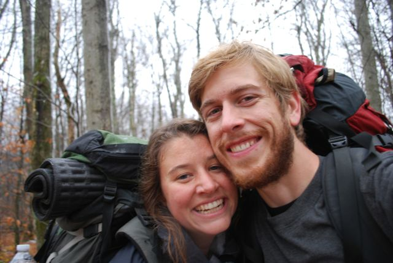

Corinne and Andy
are getting married
5/23/2015
Any questions? Contact us at corinneandandy523@gmail.com
Corinne and Andy
are getting married
Any questions? Contact us at corinneandandy523@gmail.com
All events will take place in Arlington, Virginia
The closest airport is Washington National (DCA). It is easily accessible to Arlington by public transit. Dulles (IAD) is the next best. It is about 45 minutes away by car or bus. Baltimore-Washington International (BWI) works, but it can take 1-2 hours to get to Arlington by car or 2+ hours by public transportation.
Friday, May 22nd
Please join us for an open house-style party that includes dinner and drinks at Corinne's parents' place: 600 N. Kenmore St. Arlington, VA. We'll get things started around 6 pm. Feel free to bring your kids to this event as well.
Saturday, May 23rd
Andy and Corinne will get married at Fort C.F. Smith Park followed by drinks, dinner, and dancing. We're getting a tent, so this is a rain-or-shine location. The ceremony will begin at 3:00 pm. Due to Arlington County noise regulations, we will need to vacate the park by 10:00 pm. Due to a small venue capacity, we cannot accommodate kids at this event but feel free to contact us for babysitting recommendations.
Sunday, May 24th
Please join us for a simple breakfast open house from 10 am to noon at Betty and Tom Gibbon's house: 600 N. Kenmore St. Arlington, VA.
Please RSVP for all wedding weekend events by April 1, 2015.
While there may be cheaper options out there, we have blocks of rooms reserved at two Arlington hotels at a discounted rate: the Courthouse Hilton and Inns of Virginia. We picked these hotels based on perceived convenience for our guests but you should feel free to stay wherever you would like. E-mail us for a more personal recommendation. With advanced notice we may also be able to arrange home stays for those of you traveling from afar on limited budgets. If you live in the area and are willing to house guests, please let us know.
The Hilton is located very close to Courthouse Metro on the Orange Line. It is also across the street from a lovely Saturday farmer's market and within walking distance of many bars and restaurants. A free shuttle to and from the wedding site will also be available for guests of the hotel. It is a short cab ride, a twenty-five minute walk, or a two-stop metro ride to Corinne's parents' house, which is the venue for Friday night's reception. The cost per night is $129 plus taxes (around $145 total). To make a reservation in our room block, follow this link.
The Inns of Virginia is a budget-minded hotel that is just a twenty minute walk from the wedding venue. All the rooms have two queen-sized beds and there is free onsite parking. It is about a ten minute drive from Friday night's reception venue and a 1.5 mile walk from the Metro. We have ten rooms held here for $89.99/night plus taxes (around $100 total), which is a discount of 10%. To make a reservation, call (703) 524-9800 and let them know you are with the Gibbon/Eschbacher wedding party to receive the discounted rate. For more information about the hotel, please visit http://innsofva.com/arlington.aspx.
Some people actually visit the Washington area for reasons other than our wedding. Here is a list of some of our favorite area pastimes/attractions.
How should I plan on getting to and from the wedding site? Is there on-site parking?
There is parking on site for up to 70 vehicles. These vehicles can also be left in the parking lot overnight. We will provide shuttles from the wedding site to the Inns of Virginia and a local Metro stop. More information about the shuttles will come as we get closer to the event. If you are staying at the Hilton, shuttle service will be provided to and from the event. Again, check back later for more information.
If you'd like to take a taxi, we recommend Red Top Cab. Their number is: 703 522 3333.
What's the dress code?
There isn't one. The bride will probably wear a dress and the groom is thinking about buying a second suit. We want you to feel comfortable above all else. The weather these days is anyone's guess, so we advise planning a versatile outfit. The venue is a public park so shirts and shoes would probably be encouraged by the county, but we couldn't find anything about that here: http://parks.arlingtonva.us/arlington-county-park-rules-regulations/
Do you have a wedding registry?
Nope. We truly feel that your presence on our marriage journey, be it physical or spiritual, is the best gift you could give.
What if I really, really want to get you a gift? What would you like?
If you really feel moved to give us something of a corporeal nature to mark the occasion, we've listed a few ideas below.